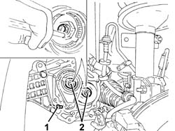
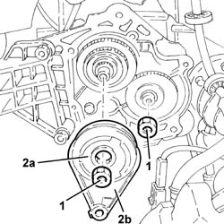
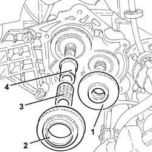
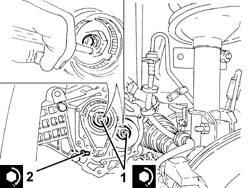

2110B40 5TH SPEED GEARS OF MANUAL GEARBOX WITH DIFFERENTIAL - R + R ON VEHICLE
- Path
- Procedures > 21 GEARBOX UNIT > 2110 MANUAL GEARBOX WITH DIFFERENTIAL > 2110B MANUAL GEARBOX WITH DIFFERENTIAL GEARS AND SYNCHRONISERS > 2110B40 5TH SPEED GEARS OF MANUAL GEARBOX WITH DIFFERENTIAL - R + R ON VEHICLE
- Kind
- repair procedure (removal / refitting; the operation number is the code)
- Applies to
- engines: 1.8 T.SPARK, 2.0 JTS; all production periods
- Interactive page
- https://sloeber94.github.io/elrnDB-aGt/en/#/125001244
Applies to: engines: 2.0 JTS; all production periods
 Removing
Removing
 Refitting
RefittingPosition the vehicle on a lift.
Proceed with the removal
Op. 4450B02 LEFT FRONT WHEEL R R.
Proceed with the removal
Op. 7055B65 ENGINGE BAY DUSTGUARD PROTECTION IN LEFT FRONT WHEEL ARCH R R.
Proceed with the removal
Op. 7055B90 LEFT FRONT WHEEL ARCH LINER - R.R..
Proceed with the removal
Op. 7055B54 UNDER-ENGINE GUARD - R R.
Proceed with the removal
Op. 2110C30 GEARBOX REAR COVER - R + R..
Pull out the 5 th speed control fork
to engage a gear.
1. Loosen the 5 th speed control fork
bolt.
Push the 5 th speed control fork
to engage 5 th
speed.
2. Remove the staking and loosen the ring nuts for the main and layshafts.

Applies to: engines: 2.0 JTS; all production periods
Place the 5 th speed control fork
in neutral.
1. Completely undo the ring nuts for the main and layshafts.
2. Remove the 5 th speed synchronizer assembly
(2a) complete with 5 th speed
fork (2b)

Applies to: engines: 2.0 JTS; all production periods
1. Remove the 5th speed driven
gear.
2. Remove the 5th speed drive
gear.
3. Remove the needle bearing for the 5th speed drive
gear.
4. Remove the bush for the 5th speed drive
gear.

Applies to: engines: 2.0 JTS; all production periods
Refitting
RemovingPlace the bush for the 5th speed drive in its
housing.
Place the needle bearing for the 5th speed drive in its
housing.
Place the 5 th speed drive gear in
position.
Place the 5 th speed driven gear in
position.
Place the 5 th speed synchronizer assembly
complete with 5 th speed fork in
position.
1. Tighten the new ring nuts for the main and layshafts to the recommended torque and stake them.
Fastening | Component | Ø | Value (daNm) | |
|---|---|---|---|---|
1 | Ring nut | MANUAL GEARBOX/DIFFERENTIAL SHAFTS | M20 | 10.6 ÷ 13.0 |
2. Tighten the 5 th speed control fork
to the specified torque.
Fastening | Component | Ø | Value (daNm) | |
|---|---|---|---|---|
2 | Bolt | 5TH SPPED FORK | M6 | 1.6 ÷ 2.0 |

Applies to: engines: 2.0 JTS; all production periods
Proceed with the refitting
Op. 2110C30 GEARBOX REAR COVER - R + R..
Proceed with the refitting
Op. 7055B54 UNDER-ENGINE GUARD - R R.
Proceed with the refitting
Op. 7055B90 LEFT FRONT WHEEL ARCH LINER - R.R..
Proceed with the refitting
Op. 7055B65 ENGINGE BAY DUSTGUARD PROTECTION IN LEFT FRONT WHEEL ARCH R R.
Proceed with the refitting
Op. 4450B02 LEFT FRONT WHEEL R R.
Refit the manual gearbox with differential
Op. 0010T41 MANUAL GEARBOX OIL CHECK LEVEL AND TOP UP IF NECESSARY.
Remove the vehicle from the lift.
Applies to: engines: 1.8 T.SPARK; all production periods
Removing
Refitting- Position the vehicle on a lift.
- Op. 4450B02 LEFT FRONT WHEEL R R
- Op. 7055B65 ENGINGE BAY DUSTGUARD PROTECTION IN LEFT FRONT WHEEL ARCH R R
- Op. 2110C30 GEARBOX REAR COVER - R + R.
- Pull out the 5th speed control fork to engage a gear.
- Loosen the bolt for the 5th speed control fork; push the 5th speed control fork downwards to engage 5th speed.
- Remove the staking and loosen the ring nuts for the main and layshafts.
Applies to: engines: 1.8 T.SPARK; all production periods
- Place the 5th speed control fork in neutral.
- Completely undo the ring nuts for the main and layshafts.
- Remove the 5th speed synchronizer assembly (2a) complete with 5th speed fork (2b).
Applies to: engines: 1.8 T.SPARK; all production periods
- Remove the 5th speed driven gear.
- Remove the 5th speed drive gear.
- Remove the needle bearing for the 5th speed drive gear.
- Remove the 5th speed drive gear bush.
Applies to: engines: 1.8 T.SPARK; all production periods
Refitting
Removing- Place the 5th speed drive gear bush in its housing.
- Place the needle bearing for the 5th speed drive gear in its housing.
- Place the 5th speed drive gear in position.
- Place the 5th speed driven gear in position.
- Place the 5th speed synchronizer assembly in position complete with 5th speed fork.
- Tighten the new ring nuts for the main and layshafts to the recommended torque and stake them.
- Tighten the bolt for the 5th speed control fork to the recommended torque.
Fastening | Component | Ø | Value (daNm) | |
|---|---|---|---|---|
1 | Ring nut | MANUAL GEARBOX/DIFFERENTIAL SHAFTS | M20 | 10.6 ÷ 13.0 |
Fastening | Component | Ø | Value (daNm) | |
|---|---|---|---|---|
2 | Bolt | 5TH SPEED FORK | M6 | 1.6 ÷ 2.0 |
Applies to: engines: 1.8 T.SPARK; all production periods